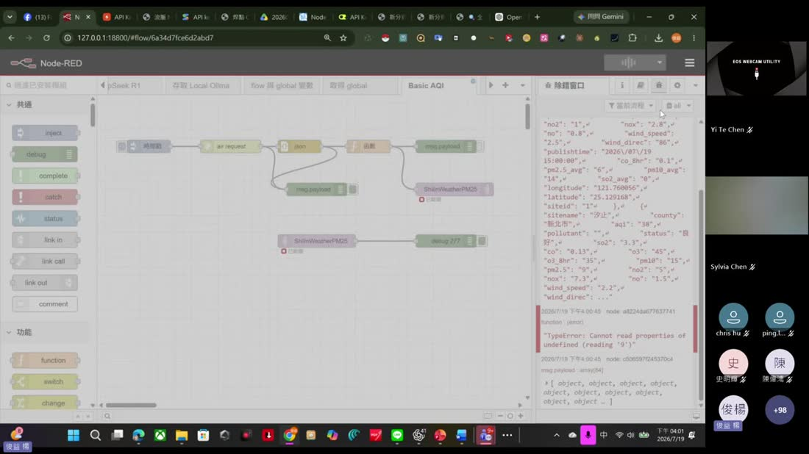
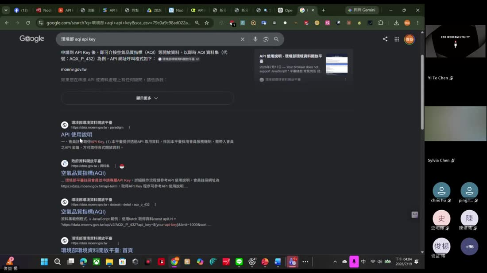
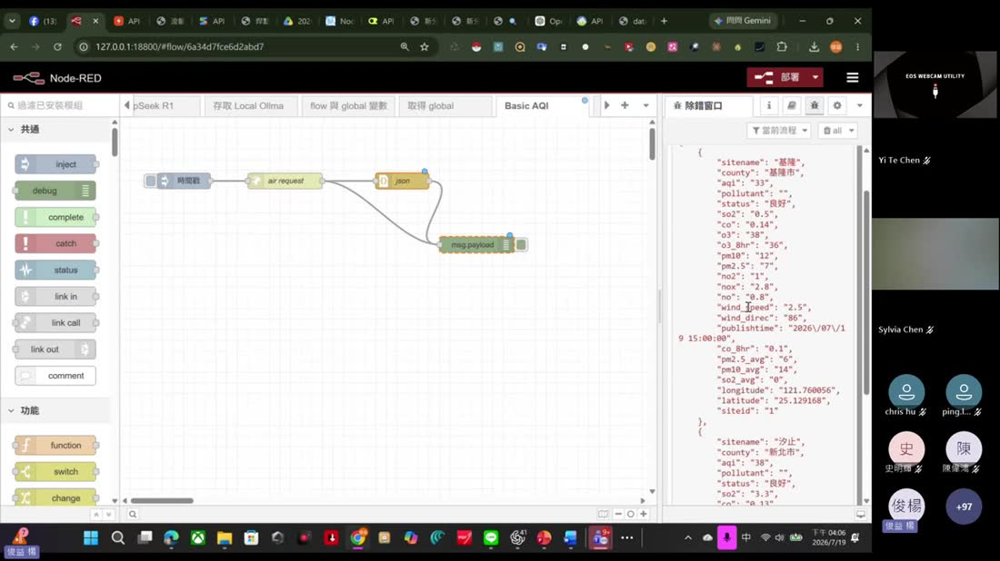
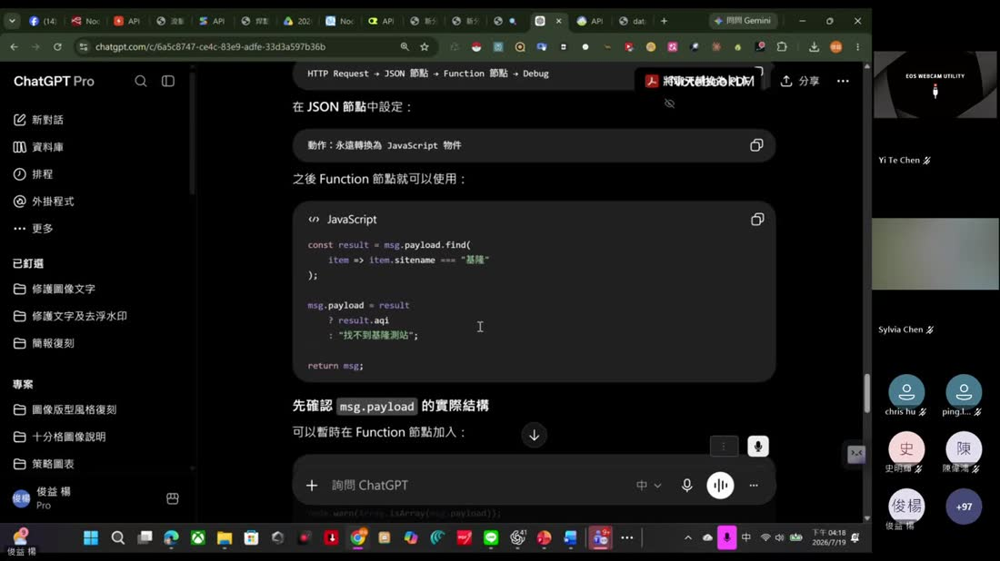
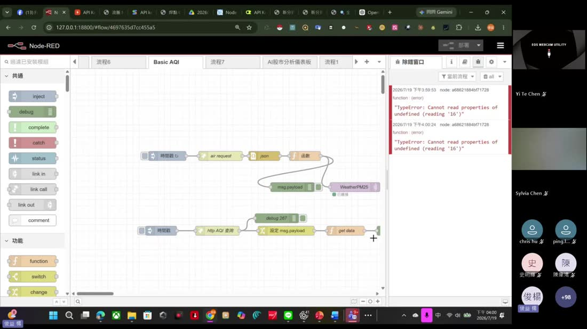
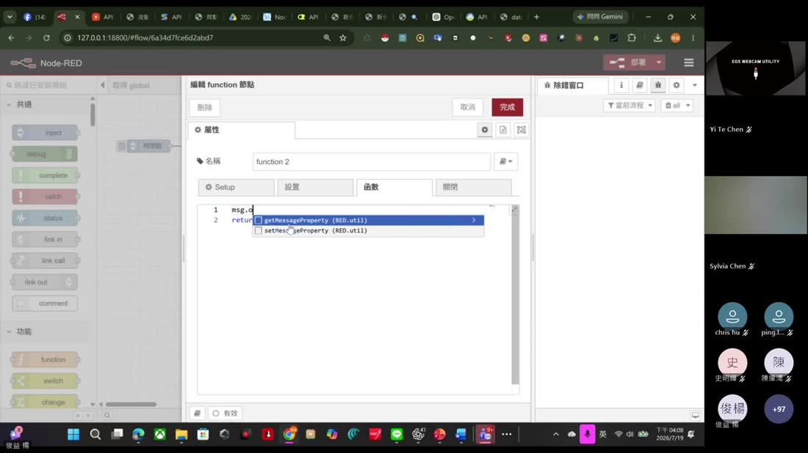

0. 課程資訊與教材
| 課程名稱 | AI Node-RED 研習（第一場） |
|---|---|
| 上課日期 | 2026/07/19（六）下午 14:00 開始，全長 2 小時 22 分 41 秒 |
| 講師 | 益師傅（楊俊益，暱稱 ECF；智慧立方有限公司） |
| 參與人數 | 約 100 位學員（Teams 線上直播，畫面最高顯示 104 人在線） |
| 本場主題 | Node-RED 基礎：介面、inject／debug、排程、flow 匯入匯出、串接 Groq／OpenRouter API、環境部 AQI 開放資料實戰 |
| 課程教材 | Drive 資料夾：課堂錄影 ×1，以及 4 個可直接匯入的 flow JSON |
📁 課程資料夾（Google Drive）
錄影與四個 flow JSON 都放在同一個共享資料夾：
🔗 開啟「2026/7/19 Node-RED (I) 研習」資料夾 ›
🎬 課堂錄影（可直接在頁面播放）
🧩 四個 flow JSON（課堂上一個一個匯入）
| 檔案 | 節點數 | 這個 flow 在做什麼 |
|---|---|---|
BasicAQI.json | 5 顆 | inject → http request（環境部 AQI）→ json → debug，最單純的「抓開放資料」流程 |
Flow與Global.json | 20 顆 | 兩個標籤頁 ×6 個 function（F1～F6），示範 context／flow／global 三層變數的差別 |
Groq_API.json | 7 顆 | inject（問題）→ function（組請求）→ http request（Groq）→ function（處理回應）→ 兩個 debug |
OpenRouter.json | 5 顆 | inject → function（組 headers／payload，指定 DeepSeek R1 模型）→ http request（OpenRouter）→ debug |
<你的 API Key> 佔位，教材原檔裡的金鑰請自行替換後再用。1. 一張圖看懂本場
這場的骨架很清楚：先懂為什麼是 Node-RED，再學會拉一條會跑的流程，最後把外面的資料與 AI 接進來。
2. Node-RED 是什麼、為什麼是它
開場前 40 分鐘老師幾乎沒碰程式，全在講這件事的來龍去脈。他的說法很白話，值得完整記下來。
從一個物聯網的老問題說起
[00:03:33] 以前玩 Arduino、ESP32 這類晶片，想把感測到的溫度、濕度顯示出來，就得寫在那塊「小小的顯示器」上。想把數值送到網頁、送到手機、存進資料庫，每一個平台都有自己不同的串接方式[00:05:54]，每次都得重寫一次。
[00:06:47] Node-RED 的做法是：把「跟某個平台串接」這件事簡化成一顆節點。老師的比喻是——你就把節點想成一個 Library 的概念。要接 MQTT 就拉 MQTT 節點，要接資料庫就拉資料庫節點，你只要負責把它們連起來。
它不只是物聯網
- [00:08:30] 背後能做的遠不只感測器：可以串 MySQL 等資料庫，也能串 TensorFlow 這類機器學習的東西。
- [00:33:57] 內建排程：想每天固定時間跑一次，不用另外寫 cron，inject 節點就做得到。
- [01:41:08] 老師自問自答「你們知道 Node-RED 最大的好處是什麼？」——答案是它可以把兩個原本不相干的功能串接起來，變成一個很強大的功能。
他為什麼要推這件事
[00:09:21]「這樣一個那麼棒的平台，為什麼大家不去推它？」——這是他四、五年前決定主動推 Node-RED 的原因。[00:12:35] 他也講明這不會是單堂課，而是一系列課程，會從基礎一路往上疊。
3. 安裝與介面：四大區塊
裝好之後怎麼打開
- 先裝 Node.js：Node-RED 跑在 Node.js 上，這是前置。[00:15:05] 老師課前就把安裝連結給大家了。
- 在瀏覽器輸入本機網址：預設是
127.0.0.1:1880。[00:17:25] 老師自己的環境改成127.0.0.1:18800，所以你看錄影裡的網址跟預設不一樣是正常的。 - Chrome、Edge 都可以[00:17:34]，它就是一個網頁介面。
畫面上你需要認得的四塊
| 區塊 | 位置 | 做什麼用 |
|---|---|---|
| 節點面板 | 左側 | 所有可用的節點，分成「共通」「功能」等群組；上面有搜尋框可以過濾。[00:21:35] 也可以額外安裝新節點。 |
| 工作區 | 中間 | 把節點拖進來、用線接起來的地方。 |
| 標籤頁（流程） | 工作區上方 | 一個標籤頁＝一個流程（flow）。[00:20:11] 老師的環境有非常多標籤頁，他提醒可以整理、也可以摺疊。 |
| 右側面板 | 右側 | 三個分頁：資訊（選到的節點的說明）、說明（節點文件）、除錯窗口（那隻小蟲圖示，所有 debug 輸出都在這）。[00:24:42] |

4. 第一條流程：inject → debug
[01:10:59] 起 這一段開始全班一起動手。這條流程只有兩顆節點，但把 Node-RED 的核心觀念全講完了。
做出來
- 從左側把 inject 拖到工作區。[01:11:31] 老師形容它「有點像是一個開關」——它是觸發者，負責讓流程開始跑。
- 再拖一顆 debug 進來。
- 把 inject 右邊的小圓點拉一條線接到 debug 左邊的小圓點。這樣就叫做一條流程。[01:12:41]
- 按右上角部署。[01:13:43] 部署代表「這個程式已經完成、開始運作了」。
- 點 inject 左邊的方形按鈕觸發，右側除錯窗口就會跳出一個數值。
那個跳出來的數字是什麼？
[01:14:01] inject 預設送出的是時間戳（timestamp）——一長串數字，是所謂的 Unix 時間，以千分之一秒為單位記錄的時間。[01:14:34] 老師提醒台灣是 UTC+8。
訊息（msg）長什麼樣子
[01:15:06] 在 Node-RED 裡，節點之間傳來傳去的東西叫 msg，它是一個 JSON 物件，裡面最重要的欄位是 msg.payload——payload 就是「這則訊息真正的內容」。除了 payload，還有 msg.topic（主題，之後串 MQTT 會用到）。
[01:16:28] inject 節點的設定裡可以把 payload 從時間戳改成字串、數字、布林值等等。老師示範改成字串 Hello World，觸發後除錯窗口就印出 Hello World。[01:17:03]
debug 節點的兩個實用習慣
- 幫節點取名字。[01:17:56] 點兩下節點可以改名稱（例如叫「測試」），流程一多就靠名字辨識。
- 除錯訊息太亂就篩選。[01:18:44] 除錯窗口上方可以切「當前流程／全部」，只看你正在做的那條。
把 inject 變成排程器
這是老師特別強調、很多人不知道的功能。[01:21:41] 點兩下 inject 節點，除了「立刻觸發」之外還有：
| 設定 | 意思 | 典型用途 |
|---|---|---|
| 間隔重複 | 每隔 N 秒／分鐘自動觸發一次 | 每 5 分鐘抓一次感測值 |
| 指定時間 | 幾點幾分做什麼動作，可挑星期幾 | [01:22:02] 每天早上九點送一則 LINE 訊息 |
| 部署後立即執行 | Node-RED 一啟動就先跑一次 | 開機自動初始化 |
5. flow JSON：匯入與匯出
整場課「請大家匯入這個檔案」出現了至少五次，這是 Node-RED 分享程式的標準方式，一定要熟。
匯入別人給你的 flow
- 點右上角的三條線選單。[01:25:32]
- 選匯入（Import）。
- 選「匯入所選擇的檔案」，挑那個
.json檔，按開啟。[01:26:02] - 它會問要匯入到目前流程還是新流程；老師建議選新流程（導入副本），比較不會跟現有的東西混在一起。[02:02:56]
- 看右下角有沒有錯誤訊息，沒有就成功了。
把自己的 flow 匯出給別人
[01:45:41] 匯出前有個關鍵動作老師特別強調：先確認你有沒有選到任何節點。
6. 串 AI API：Groq 與 OpenRouter
這一段是本場的第一個高潮：讓 Node-RED 直接去問 AI。老師示範了兩家都有免費額度的服務。
共同的四段式結構
Groq
[01:29:37] 到 Groq 主控台申請一把 key（申請時要設到期日），複製下來貼進 function 節點的 apiKey 變數裡。老師教材裡的 Groq_API.json 就是這個結構：
[01:31:30] 課堂上大家一起把 inject 的問題改成「請用繁體中文介紹…」，觸發後在除錯窗口一層一層展開回應：payload → choices → 陣列第 0 筆 → message → content。[01:33:17]
OpenRouter（DeepSeek R1）
[01:44:04] OpenRouter 的好處是一把 key 可以串很多家平台的模型。教材 OpenRouter.json 裡指定的是 DeepSeek R1：
看不懂 API 文件怎麼辦
[01:52:57] 老師的實際做法：API 官網的範例通常是 curl 或 Python，直接把那段範例丟給 AI，請它改寫成 Node-RED function 節點的寫法，然後移植過來。他強調自己串接時也是層層卡關[01:56:55]，靠問 AI 一關一關過。
7. 實戰：空氣品質 AQI 與除錯全紀錄
最後一小時的主軸。這一段最值得看的不是成功，而是老師當場卡住、當場除錯的完整過程。
先把資料抓下來（BasicAQI.json）
[01:41:05] 環境部「環境資料開放平臺」提供空氣品質指標（資料集代號 AQX_P_432）。要先註冊會員取得 API Key，網址格式如下：

flow 只有四顆節點：
- http request 節點：請求方式選 GET，URL 貼上去，「返回」選 UTF-8 字串。
- json 節點：把回來的字串轉成 JavaScript 物件，這樣後面才好處理。
- debug：觸發後可以看到一個
array[84]，裡面是全台 84 個測站，每站有 sitename（測站名）、county（縣市）、aqi、status、pm2.5、o3、wind_speed 等欄位。[02:00:00]

接著遇到真正的問題：我只要「基隆」那一筆
[02:05:44] 全台 84 筆資料太多了，老師的目標是只抓出特定測站的 AQI。他當場示範不會寫就去問：把資料範例貼給 ChatGPT，問「若我需要找出 sitename = 基隆，JavaScript 該如何寫」。

msg.payload 並且 return msg，這是初學者最常漏掉的一步。然後就報錯了：find is not a function
"TypeError: msg.payload.find is not a function"[02:16:00] 課堂上真的跳出這個錯誤。老師的處理方式一樣：把錯誤訊息原封不動貼給 ChatGPT。

find is not a function、Cannot read properties of undefined——都是同一類問題：你以為的資料形狀，跟實際拿到的不一樣。原因與解法
.find() 是陣列才有的方法。如果 msg.payload 這時候還是字串（或是外面還包了一層物件），它就沒有 find 可以用。ChatGPT 給的解法有兩個層次：
- 確認 JSON 節點的設定：在 json 節點裡把動作設成「永遠轉換為 JavaScript 物件」，確保進到 function 之前已經是物件／陣列。[02:18:07]
- 先驗證資料形狀再處理：在 function 節點裡加一行檢查，直接把答案印在除錯窗口。

RED.util.getMessageProperty）。[02:08:20] 老師提醒：每一行結尾的分號、以及最後的 return msg; 都不能漏，漏了流程就斷在這裡。① 先用 debug 看清楚資料實際長什麼樣（是陣列還是字串？外面包了幾層？）
② 不會寫就連同資料範例一起問 AI，並且要講明「在 Node-RED 的 function 節點裡」
③ 報錯就把錯誤訊息整段貼回去，讓 AI 針對錯誤修正
[02:19:11] 老師自己的說法是：熟 AI 的人，卡關的時間會短很多。
8. 老師的自製節點展示
前半場老師快速展示了一輪自己做的東西，當作「學完能做到什麼」的預告。這些大多是第二場的主題，這裡先建立印象。
| 作品 | 它在做什麼 | 時間戳 |
|---|---|---|
| 全能辨識 OCR 節點 | 原本是一支網頁程式，被包成 Node-RED 節點；可辨識圖片文字、發票、流程圖，並用繁體中文描述圖像內容 | [00:34:40] |
| 台語語音節點 | 台語的語音合成與語音轉文字，也做成節點 | [00:22:27] |
| AI 股市分析儀表板 | 抓個股資料＋AI 分析，做成一個標籤頁的流程 | [00:30:55] |
| UVI／空氣品質查詢 | 紫外線指數與空品資料，抓完直接用 MQTT 丟出去 | [00:41:33] |
| Node-RED Flow Simulator | 他自己寫的模擬器網頁，可以拖拉節點、單步執行、逐步看訊息跑到哪裡，用來教學與除錯 | [01:04:19] |
| 數位儀表板（新舊版） | 舊版 UI 與新版 Dashboard 2.0 的對照展示 | [00:52:35] |
| 拉霸／骰子小遊戲 | 用 Node-RED 做的互動小遊戲，證明它不只是工業用途 | [00:51:09] |
9. 課後自我檢核表
照著勾，勾不起來的那項就回去看對應章節。
- 我裝好了 Node.js 與 Node-RED，能在瀏覽器用
127.0.0.1:1880打開編輯器。 - 我認得畫面上的四個區塊：節點面板、工作區、標籤頁、右側面板（資訊／說明／除錯窗口）。
- 我能自己拉出 inject → debug，按下部署後觸發，並在除錯窗口看到輸出。
- 我知道
msg.payload是什麼，也會把 inject 的 payload 從時間戳改成字串。 - 我會用 inject 設定間隔重複與指定時間，知道它可以當排程器用。
- 我會用三條線選單匯入 flow JSON，也知道匯出前要先取消選取節點。
- 我照著串起了 Groq 或 OpenRouter 其中一支 API，並在除錯窗口一層層展開找到 AI 的回覆文字。
- 我抓得到環境部 AQI 開放資料，看得懂回來的是一個 84 筆的陣列。
- 我會在 function 節點裡用
find()取出指定測站，而且記得return msg;。 - ★ 最重要：遇到報錯時，我會先用 debug 確認資料形狀，再把錯誤訊息＋資料範例＋「在 Node-RED 的 function 節點裡」一起丟給 AI 問。
10. 老師金句
11. 資料來源與整理說明
- 原始教材：Google Drive 資料夾「2026/7/19 Node-RED (I) 研習」——課堂錄影一段（2 小時 22 分 41 秒），以及四個 flow JSON（BasicAQI、Flow與Global、Groq_API、OpenRouter）。
- 整理方法：錄影用 ffmpeg 每 35 秒抽一格（共 245 格），逐格用眼睛看過並記錄畫面內容；同時用 faster-whisper（small／int8）產出全程逐字稿（4,764 段），兩者交叉比對。四個 flow JSON 逐檔解析節點結構，用來還原程式碼片段。
- 可信度標註：畫面截圖、節點設定、錯誤訊息皆為錄影實錄；程式碼片段以教材 JSON 的實際內容為準，僅將 API 金鑰替換為佔位符。時間戳來自逐字稿，因語音辨識可能有數秒誤差。
- 金鑰處理：錄影中有數個畫面出現老師的 API 金鑰明碼（環境部、Groq、OpenRouter），依專案規則一律不收錄，本頁改用不含金鑰的畫面，程式碼一律寫成
<你的 API Key>。 - 沒有簡報檔：這場沒有傳統投影片，「畫面」就是老師的實機操作，所以截圖全部取自錄影抽格。